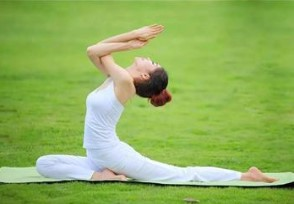

“减肥”是爱美人士永恒的课题，一辈子追求的“状态”
健康减肥，一定离不开饮食和运动，“管住嘴，迈开腿”是减肥的中心原则；
除了科学控制饮食之外，“运动”一事需要所有人注意；坚持运动、合理运动，减肥大业方可成功
这几项运动，更适合减肥：
最简单的运动—跑步：
相对而言，“跑步”是生活中比较简单的一种运动；简单的摆臂，平稳的呼吸，适当的热身，循序渐进即可。
对于减肥而言，更建议大家选择“慢跑”，适度慢跑，不伤膝盖；慢跑一个小时就可以消耗357.5卡路里左右的热量

瑜伽：
一种比较舒缓的运动，对于减肥具有“实质性作用”。
做“一呼一吸都有动作的瑜伽”，延伸、呼吸、循序渐进；
推荐选择“节奏感更强的瑜伽”，燃烧更多的卡路里，利于减肥的完美达成。
除了这些以外，做家务、仰卧起坐、打球等运动同样也是减肥阶段的有效运动；
相互配合，循序增量，坚持到底，方得胜利
运动过程中，有些细节要注意：
1.运动，时间不能太短，减肥时期的运动时间更要保证，每日运动时间要在一小时以上
2.运动之前，请您好好热身，压腿、快走、拉伸等运动要跟上
3.减肥，有氧运动与无氧器械运动相结合，效果更加稳固
4.坚持，就是胜利